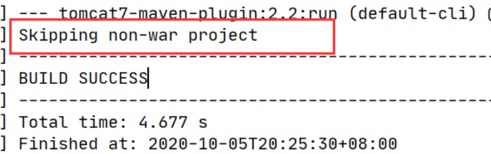
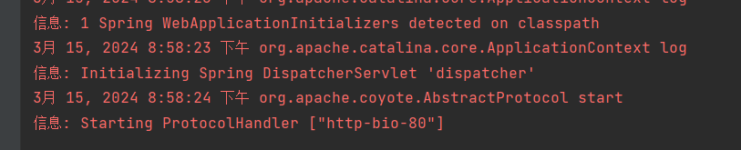
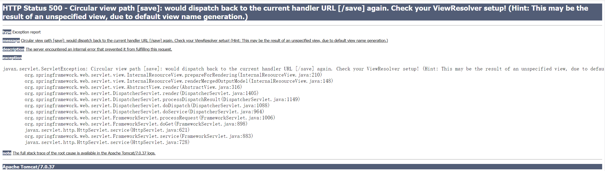
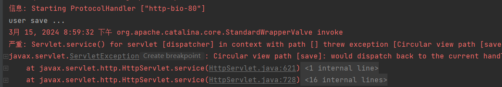
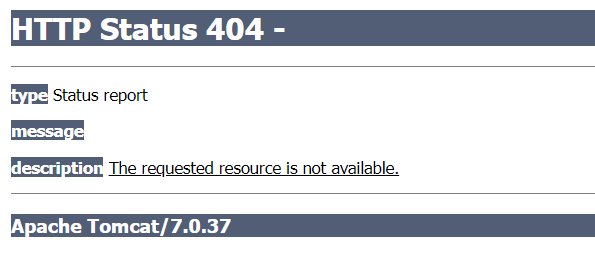
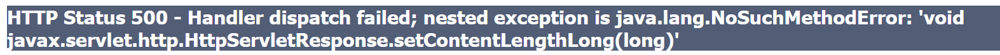
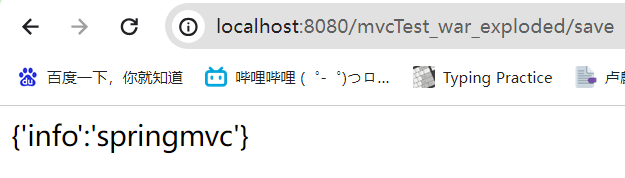

SpringMVC 隶属于 Spring，是 Spring 技术中的一部分。那么 SpringMVC 到底是用来做什么的呢？
- 回想 web 阶段，我们学习过 Servlet, 而 SpringMVC 与 Servlet 技术功能等同，均属于 web 层或者说表现层开发技术。
那么既然已经有了 Servlet 为什么还需要花时间再学习一个 SpringMVC 技术？要回答这个问题，我们就需要搞清楚 SpringMVC 与 Servlet 相比，有什么优势:
框架我们都知道是用来简化开发的，所以 SpringMVC 与 Servlet 相比，开发起来更简单快捷，用更少的代码完成表现层代码的开发，那么问题又来了，到底有多简单呢？我们通过一个例子来体验一把吧。
对于 SpringMVC 的学习，最终要达成的目标:
- 掌握基于 SpringMVC 获取请求参数和响应 json 数据操作
- 熟练应用基于 REST 风格的请求路径设置与参数传递
- 能够根据实际业务建立前后端开发通信协议并进行实现
- 基于 SSM 整合技术开发任意业务模块功能
# SpringMVC 概述

- 浏览器发送一个请求给后端服务器，后端服务器现在是使用 Servlet 来接收请求和数据
- 如果所有的处理都交给 Servlet 来处理的话，所有的东西都耦合在一起，对后期的维护和扩展极为不利
- 将后端服务器 Servlet 拆分成三层，分别是
web、service和dao- web 层主要由 servlet 来处理，负责页面请求和数据的收集以及响应结果给前端
- service 层主要负责业务逻辑的处理
- dao 层主要负责数据的增删改查操作
- servlet 处理请求和数据的时候，存在的问题是一个 servlet 只能处理一个请求
- 针对 web 层进行了优化，采用了 MVC 设计模式，将其设计为
controller、view和Model - controller 负责请求和数据的接收，接收后将其转发给 service 进行业务处理
- service 根据需要会调用 dao 对数据进行增删改查
- dao 把数据处理完后将结果交给 service,service 再交给 controller
- controller 根据需求组装成 Model 和 View,Model 和 View 组合起来生成页面转发给前端浏览器
- 这样做的好处就是 controller 可以处理多个请求，并对请求进行分发，执行不同的业务操作。
- 针对 web 层进行了优化，采用了 MVC 设计模式，将其设计为
随着互联网的发展，上面的模式因为是同步调用，性能慢慢的跟不是需求，所以异步调用慢慢的走到了前台，是现在比较流行的一种处理方式。
- 因为是异步调用，所以后端不需要返回 View 视图，将其去除
- 前端如果通过异步调用的方式进行交互，后端就需要将返回的数据转换成 JSON 格式进行返回
- SpringMVC 主要负责的就是
- controller 如何接收请求和数据
- 如何将请求和数据转发给业务层
- 如何将响应数据转换成 JSON 发挥到前端
- SpringMVC 是一种基于 Java 实现 MVC 模型的轻量级 Web 框架
- 优点
- 使用简单、开发快捷（相比较于 Servlet）
- 灵活性强
- 优点
# SpringMVC 入门案例
因为 SpringMVC 是一个 Web 框架，将来是要替换 Servlet, 所以先来回顾下以前 Servlet 是如何进行开发的？
- 创建 web 工程 (Maven 结构)
- 设置 tomcat 服务器，加载 web 工程 (tomcat 插件)
- 导入坐标 (Servlet)
- 定义处理请求的功能类 (UserServlet)
- 设置请求映射 (配置映射关系)
SpringMVC 的制作过程和上述流程几乎是一致的，具体的实现流程是什么？
- 创建 web 工程 (Maven 结构)
- 设置 tomcat 服务器，加载 web 工程 (tomcat 插件)
- 导入坐标 (SpringMVC+Servlet)
- 定义处理请求的功能类 (UserController)
- 设置请求映射 (配置映射关系)
- 将 SpringMVC 设定加载到 Tomcat 容器中
# 流程
步骤 1: 创建 Maven 项目
打开 IDEA, 创建一个新的 web 项目
步骤 2: 导入 jar 包
将 pom.xml 中多余的内容删除掉，再添加 SpringMVC 需要的依赖
<?xml version="1.0" encoding="UTF-8"?> | |
<project xmlns="http://maven.apache.org/POM/4.0.0" | |
xmlns:xsi="http://www.w3.org/2001/XMLSchema-instance" | |
xsi:schemaLocation="http://maven.apache.org/POM/4.0.0 http://maven.apache.org/xsd/maven-4.0.0.xsd"> | |
<modelVersion>4.0.0</modelVersion> | |
<groupId>com.zy</groupId> | |
<artifactId>mvcTest</artifactId> | |
<version>1.0-SNAPSHOT</version> | |
<properties> | |
<maven.compiler.source>16</maven.compiler.source> | |
<maven.compiler.target>16</maven.compiler.target> | |
</properties> | |
<dependencies> | |
<dependency> | |
<groupId>javax.servlet</groupId> | |
<artifactId>javax.servlet-api</artifactId> | |
<version>3.1.0</version> | |
<scope>provided</scope> | |
</dependency> | |
<dependency> | |
<groupId>org.springframework</groupId> | |
<artifactId>spring-webmvc</artifactId> | |
<version>5.3.23</version> | |
</dependency> | |
</dependencies> | |
<build> | |
<plugins> | |
<plugin> | |
<groupId>org.apache.tomcat.maven</groupId> | |
<artifactId>tomcat7-maven-plugin</artifactId> | |
<version>2.1</version> | |
<configuration> | |
<port>80</port> | |
<path>/</path> | |
</configuration> | |
</plugin> | |
</plugins> | |
</build> | |
</project> |
说明: servlet 的坐标为什么需要添加 <scope>provided</scope> ?
scope 是 maven 中 jar 包依赖作用范围的描述，
如果不设置默认是
compile在在编译、运行、测试时均有效如果运行有效的话就会和 tomcat 中的 servlet-api 包发生冲突，导致启动报错
provided 代表的是该包只在编译和测试的时候用，运行的时候无效直接使用 tomcat 中的，就避免冲突
步骤 3: 创建配置类
@Configuration | |
@ComponentScan("com.itheima.controller") | |
public class SpringMvcConfig { | |
} |
步骤 4: 创建 Controller 类
@Controller | |
public class UserController { | |
@RequestMapping("/save") | |
public void save(){ | |
System.out.println("user save ..."); | |
} | |
} |
步骤 5: 使用配置类替换 web.xml
将 web.xml 删除，换成 ServletContainersInitConfig
public class ServletContainersInitConfig extends AbstractDispatcherServletInitializer { | |
// 加载 springmvc 配置类 | |
protected WebApplicationContext createServletApplicationContext() { | |
// 初始化 WebApplicationContext 对象 | |
AnnotationConfigWebApplicationContext ctx = new AnnotationConfigWebApplicationContext(); | |
// 加载指定配置类 | |
ctx.register(SpringMvcConfig.class); | |
return ctx; | |
} | |
// 设置由 springmvc 控制器处理的请求映射路径 | |
protected String[] getServletMappings() { | |
return new String[]{"/"}; | |
} | |
// 加载 spring 配置类 | |
protected WebApplicationContext createRootApplicationContext() { | |
return null; | |
} | |
} |
步骤 6: 配置 Tomcat 环境
步骤 7: 启动运行项目

首先遇到了
添加 <ignorePackaging>true</ignorePackaging> 解决
<groupId>org.apache.tomcat.maven</groupId> | |
<artifactId>tomcat7-maven-plugin</artifactId> | |
<version>2.1</version> | |
<configuration> | |
<port>80</port> | |
<path>/</path> | |
<ignorePackaging>true</ignorePackaging> | |
</configuration> |
然后没有正常建 webapp 项目的错 src\main\webapp does not exist or is not a readable directory
手动添加参考，然后正常跑起

步骤 8: 浏览器访问
浏览器输入 http://localhost/save 进行访问，会报如下错误:

页面报错的原因是后台没有指定返回的页面，目前只需要关注控制台看 user save ... 有没有被执行即可。

步骤 9: 修改 Controller 返回值解决上述问题
前面我们说过现在主要的是前端发送异步请求，后台响应 json 数据，所以接下来我们把 Controller 类的 save 方法进行修改
@Controller | |
public class UserController { | |
@RequestMapping("/save") | |
public String save(){ | |
System.out.println("user save ..."); | |
return "{'info':'springmvc'}"; | |
} | |
} |
再次重启 tomcat 服务器，然后重新通过浏览器测试访问，会发现还是会报错，这次的错是 404

出错的原因是，如果方法直接返回字符串，springmvc 会把字符串当成页面的名称在项目中进行查找返回，因为不存在对应返回值名称的页面，所以会报 404 错误，找不到资源。
而我们其实是想要直接返回的是 json 数据，具体如何修改呢？ @ResponseBody
步骤 10: 设置返回数据为 json
@Controller | |
public class UserController { | |
@RequestMapping("/save") | |
@ResponseBody | |
public String save(){ | |
System.out.println("user save ..."); | |
return "{'info':'springmvc'}"; | |
} | |
} |
# tomcat 本地问题
再次重启 tomcat 服务器，然后重新通过浏览器测试访问，就能看到返回的结果数据
又遇到问题，可能我的 16 太高了，总之下面问题的说法都是更改 tomcat 的版本（确保有导入 javax.servlet）
org.springframework.web.util.NestedServletException: Handler dispatch failed; nested exception is java.lang.NoSuchMethodError: 'void javax.servlet.http.HttpServletResponse.setContentLengthLong(long)'
然而 pom 里面的 Tomcat 依赖只有到 7 版本的，高的就要调用本地的，步骤参考：
idea 安装 tomcat
换本地后地址也变了 http://localhost:8080/mvcTest_war_exploded/save ， mvcTest_war_exploded 应该是跟我的 tomcat 配置的时候有关，总之是成了

SSM 后续，实际开发不能带项目名，不然 @RequestMapping 映射的地址也要变，在 idea 的 tomcat 设置的 deployment 中，将 application context 改为 /
以及 tomcat 的输出乱码问题解决
注意事项
- SpringMVC 是基于 Spring 的，在 pom.xml 只导入了
spring-webmvcjar 包的原因是它会自动依赖 spring 相关坐标 - AbstractDispatcherServletInitializer 类是 SpringMVC 提供的快速初始化 Web3.0 容器的抽象类
- AbstractDispatcherServletInitializer 提供了三个接口方法供用户实现
- createServletApplicationContext 方法，用来加载 SpringMVC 环境。创建 Servlet 容器时，加载 SpringMVC 对应的 bean 并放入 WebApplicationContext 对象范围中，而 WebApplicationContext 的作用范围为 ServletContext 范围，即整个 web 容器范围
- getServletMappings 方法，设定 SpringMVC 对应的请求映射路径，即 SpringMVC 拦截哪些请求
- createRootApplicationContext 方法，用来加载 Spring 环境。如果创建 Servlet 容器时需要加载非 SpringMVC 对应的 bean, 使用当前方法进行，使用方式和 createServletApplicationContext 相同。
# 总结
一次性工作
- 创建工程，设置服务器，加载工程
- 导入坐标
- 创建 web 容器启动类，加载 SpringMVC 配置，并设置 SpringMVC 请求拦截路径
- SpringMVC 核心配置类（设置配置类，扫描 controller 包，加载 Controller 控制器 bean）
多次工作
- 定义处理请求的控制器类
- 定义处理请求的控制器方法，并配置映射路径（@RequestMapping）与返回 json 数据（@ResponseBody）
# 流程解析
为了更好的使用 SpringMVC, 我们将 SpringMVC 的使用过程总共分两个阶段来分析，分别是 启动服务器初始化过程 和 单次请求过程
# 启动服务器初始化过程
- 服务器启动，执行 ServletContainersInitConfig 类，初始化 web 容器
- 功能类似于以前的 web.xml
- 执行 createServletApplicationContext 方法，创建了 WebApplicationContext 对象
- 该方法加载 SpringMVC 的配置类 SpringMvcConfig 来初始化 SpringMVC 的容器
- 加载 SpringMvcConfig 配置类
- 执行 @ComponentScan 加载对应的 bean
- 扫描指定包及其子包下所有类上的注解，如 Controller 类上的 @Controller 注解
- 加载 UserController，每个 @RequestMapping 的名称对应一个具体的方法
- 此时就建立了
/save和 save 方法的对应关系
- 此时就建立了
- 执行 getServletMappings 方法，设定 SpringMVC 拦截请求的路径规则
/代表所拦截请求的路径规则，只有被拦截后才能交给 SpringMVC 来处理请求
# 单次请求过程
- 发送请求
http://localhost/save - web 容器发现该请求满足 SpringMVC 拦截规则，将请求交给 SpringMVC 处理
- 解析请求路径 /save
- 由 /save 匹配执行对应的方法 save (）
- 上面的第五步已经将请求路径和方法建立了对应关系，通过 /save 就能找到对应的 save 方法
- 执行 save ()
- 检测到有 @ResponseBody 直接将 save () 方法的返回值作为响应体返回给请求方
# Bean 加载控制
# 问题分析
入门案例的内容已经做完了，在入门案例中我们创建过一个 SpringMvcConfig 的配置类，在之前学习 Spring 的时候也创建过一个配置类 SpringConfig 。这两个配置类都需要加载资源，那么它们分别都需要加载哪些内容？
我们先来回顾一下项目结构com.blog 下有 config 、 controller 、 service 、 dao 这四个包
config目录存入的是配置类，写过的配置类有:- ServletContainersInitConfig
- SpringConfig
- SpringMvcConfig
- JdbcConfig
- MybatisConfig
controller目录存放的是SpringMVC的controller类service目录存放的是service接口和实现类dao目录存放的是dao/Mapper接口
controller、service 和 dao 这些类都需要被容器管理成 bean 对象，那么到底是该让 SpringMVC 加载还是让 Spring 加载呢？
SpringMVC控制的 bean- 表现层 bean, 也就是
controller包下的类
- 表现层 bean, 也就是
Spring控制的 bean- 业务 bean (
Service) - 功能 bean (
DataSource,SqlSessionFactoryBean,MapperScannerConfigurer等)
- 业务 bean (
分析清楚谁该管哪些 bean 以后，接下来要解决的问题是如何让 Spring 和 SpringMVC 分开加载各自的内容。
在 SpringMVC 的配置类 SpringMvcConfig 中使用注解 @ComponentScan ，我们只需要将其扫描范围设置到 controller 即可，如: @ComponentScan("com.zy.controller") ，但 SpringConfig 会 @ComponentScan("com.zy") 涵盖，从包结构来看的话，Spring 已经多把 SpringMVC 的 controller 类也给扫描到，所以针对这个问题该如何解决，就是咱们接下来要学习的内容。
概括的描述下咱们现在的问题就是因为功能不同，如何避免 Spring 错误加载到 SpringMVC 的 bean?
# 思路分析
对于上面的问题，解决方案也比较简单
- 加载 Spring 控制的 bean 的时候，
排除掉SpringMVC 控制的 bean
那么具体该如何实现呢？
- 方式一：Spring 加载的 bean 设定扫描范围
com.blog，排除掉controller包内的 bean - 方式二：Spring 加载的 bean 设定扫描范围为精确扫描，具体到
service包，dao包等 - 方式三：不区分 Spring 与 SpringMVC 的环境，加载到同一个环境中 (
了解即可)
# 环境配置
创建一个 Web 的 Maven 项目
pom.xml 添加 Spring 依赖
<?xml version="1.0" encoding="UTF-8"?><project xmlns="http://maven.apache.org/POM/4.0.0" xmlns:xsi="http://www.w3.org/2001/XMLSchema-instance"xsi:schemaLocation="http://maven.apache.org/POM/4.0.0 http://maven.apache.org/xsd/maven-4.0.0.xsd">
<modelVersion>4.0.0</modelVersion>
<groupId>com.itheima</groupId>
<artifactId>springmvc_02_bean_load</artifactId>
<version>1.0-SNAPSHOT</version>
<packaging>war</packaging>
<dependencies><dependency><groupId>javax.servlet</groupId>
<artifactId>javax.servlet-api</artifactId>
<version>3.1.0</version>
<scope>provided</scope>
</dependency><dependency><groupId>org.springframework</groupId>
<artifactId>spring-webmvc</artifactId>
<version>5.2.10.RELEASE</version>
</dependency><dependency><groupId>com.alibaba</groupId>
<artifactId>druid</artifactId>
<version>1.1.16</version>
</dependency><dependency><groupId>org.mybatis</groupId>
<artifactId>mybatis</artifactId>
<version>3.5.6</version>
</dependency><dependency><groupId>mysql</groupId>
<artifactId>mysql-connector-java</artifactId>
<version>5.1.47</version>
</dependency><dependency><groupId>org.springframework</groupId>
<artifactId>spring-jdbc</artifactId>
<version>5.2.10.RELEASE</version>
</dependency><dependency><groupId>org.mybatis</groupId>
<artifactId>mybatis-spring</artifactId>
<version>1.3.0</version>
</dependency></dependencies><build><plugins><plugin><groupId>org.apache.tomcat.maven</groupId>
<artifactId>tomcat7-maven-plugin</artifactId>
<version>2.1</version>
<configuration><port>80</port>
<path>/</path>
</configuration></plugin></plugins></build></project>创建对应的配置类
public class ServletContainersInitConfig extends AbstractDispatcherServletInitializer {
protected WebApplicationContext createServletApplicationContext() {
AnnotationConfigWebApplicationContext ctx = new AnnotationConfigWebApplicationContext();
ctx.register(SpringMvcConfig.class);
return ctx;
}protected String[] getServletMappings() {
return new String[]{"/"};
}protected WebApplicationContext createRootApplicationContext() {
return null;
}}@Configuration@ComponentScan("com.itheima.controller")
public class SpringMvcConfig {
}@Configuration@ComponentScan("com.itheima")
public class SpringConfig {
}编写 Controller，Service，Dao，Domain 类
@Controllerpublic class UserController {
@RequestMapping("/save")
@ResponseBodypublic String save(){
System.out.println("user save ...");
return "{'info':'springmvc'}";
}}public interface UserService {
public void save(User user);
}@Servicepublic class UserServiceImpl implements UserService {
public void save(User user) {
System.out.println("user service ...");
}}public interface UserDao {
@Insert("insert into tbl_user(name,age)values(#{name},#{age})")
public void save(User user);
}public class User {
private Integer id;
private String name;
private Integer age;
//setter..getter..toString 略}
配置目录如下
# 实现
方式一：修改 Spring 配置类，设定扫描范围为精准范围。
@Configuration | |
@ComponentScan({"com.itheima.service","comitheima.dao"}) | |
public class SpringConfig { | |
} |
说明:
上述只是通过例子说明可以精确指定让 Spring 扫描对应的包结构，真正在做开发的时候，因为 Dao 最终是交给 MapperScannerConfigurer 对象来进行扫描处理的，我们只需要将其扫描到 service 包即可。
方式二：修改 Spring 配置类，设定扫描范围为 com.itheima, 排除掉 controller 包中的 bean
@Configuration | |
@ComponentScan(value="com.itheima", | |
excludeFilters=@ComponentScan.Filter( | |
type = FilterType.ANNOTATION, | |
classes = Controller.class | |
) | |
) | |
public class SpringConfig { | |
} |
excludeFilters 属性：设置扫描加载 bean 时，排除的过滤规则
type 属性：设置排除规则，当前使用按照 bean 定义时的注解类型进行排除
- ANNOTATION：按照注解排除
- ASSIGNABLE_TYPE: 按照指定的类型过滤
- ASPECTJ: 按照 Aspectj 表达式排除，基本上不会用
- REGEX: 按照正则表达式排除
- CUSTOM: 按照自定义规则排除
大家只需要知道第一种 ANNOTATION 即可
classes 属性：设置排除的具体注解类，当前设置排除 @Controller 定义的 bean
如何测试 controller 类已经被排除掉了？
public class App{ | |
public static void main (String[] args){ | |
AnnotationConfigApplicationContext ctx = new AnnotationConfigApplicationContext(SpringConfig.class); | |
System.out.println(ctx.getBean(UserController.class)); | |
} | |
} |
如果被排除了，该方法执行就会报 bean 未被定义的错误
注意：测试的时候，需要把 SpringMvcConfig 配置类上的 @ComponentScan 注解注释掉，否则不会报错
出现问题的原因是，
- Spring 配置类扫描的包是
com.itheima - SpringMVC 的配置类，
SpringMvcConfig上有一个 @Configuration 注解，也会被 Spring 扫描到 - SpringMvcConfig 上又有一个 @ComponentScan，把 controller 类又给扫描进来了
- 所以如果不把 @ComponentScan 注释掉，Spring 配置类将 Controller 排除，但是因为扫描到 SpringMVC 的配置类，又将其加载回来，演示的效果就出不来
- 解决方案，也简单，把 SpringMVC 的配置类移出 Spring 配置类的扫描范围即可。
最后一个问题，有了 Spring 的配置类，要想在 tomcat 服务器启动将其加载，我们需要修改 ServletContainersInitConfig
public class ServletContainersInitConfig extends AbstractDispatcherServletInitializer { | |
protected WebApplicationContext createServletApplicationContext() { | |
AnnotationConfigWebApplicationContext ctx = new AnnotationConfigWebApplicationContext(); | |
ctx.register(SpringMvcConfig.class); | |
return ctx; | |
} | |
protected String[] getServletMappings() { | |
return new String[]{"/"}; | |
} | |
protected WebApplicationContext createRootApplicationContext() { | |
AnnotationConfigWebApplicationContext ctx = new AnnotationConfigWebApplicationContext(); | |
ctx.register(SpringConfig.class); | |
return ctx; | |
} | |
} |
对于上述的配置方式，Spring 还提供了一种更简单的配置方式，可以不用再去创建 AnnotationConfigWebApplicationContext 对象，不用手动 register 对应的配置类，如何实现？
public class ServletContainersInitConfig extends AbstractAnnotationConfigDispatcherServletInitializer { | |
protected Class<?>[] getRootConfigClasses() { | |
return new Class[]{SpringConfig.class}; | |
} | |
protected Class<?>[] getServletConfigClasses() { | |
return new Class[]{SpringMvcConfig.class}; | |
} | |
protected String[] getServletMappings() { | |
return new String[]{"/"}; | |
} | |
} |
# PostMan 工具的使用
代码编写完后，我们要想测试，只需要打开浏览器直接输入地址发送请求即可。发送的是 GET 请求可以直接使用浏览器，但是如果要发送的是 POST 请求呢？
如果要求发送的是 post 请求，我们就得准备页面在页面上准备 form 表单，测试起来比较麻烦。所以我们就需要借助一些第三方工具，如 PostMan.
# 请求与响应
前面我们已经完成了入门案例相关的知识学习，接来了我们就需要针对 SpringMVC 相关的知识点进行系统的学习，之前我们提到过，SpringMVC 是 web 层的框架，主要的作用是接收请求、接收数据、响应结果，所以这一章节是学习 SpringMVC 的重点内容，我们主要会讲解四部分内容:
- 请求映射路径
- 请求参数
- 日期类型参数传递
- 响应 json 数据
# 设置请求映射路径
# 环境准备
创建一个 Web 的 Maven 项目
pom.xml 添加 Spring 依赖
<?xml version="1.0" encoding="UTF-8"?><project xmlns="http://maven.apache.org/POM/4.0.0" xmlns:xsi="http://www.w3.org/2001/XMLSchema-instance"xsi:schemaLocation="http://maven.apache.org/POM/4.0.0 http://maven.apache.org/xsd/maven-4.0.0.xsd">
<modelVersion>4.0.0</modelVersion>
<groupId>com.itheima</groupId>
<artifactId>springmvc_03_request_mapping</artifactId>
<version>1.0-SNAPSHOT</version>
<packaging>war</packaging>
<dependencies><dependency><groupId>javax.servlet</groupId>
<artifactId>javax.servlet-api</artifactId>
<version>3.1.0</version>
<scope>provided</scope>
</dependency><dependency><groupId>org.springframework</groupId>
<artifactId>spring-webmvc</artifactId>
<version>5.2.10.RELEASE</version>
</dependency></dependencies><build><plugins><plugin><groupId>org.apache.tomcat.maven</groupId>
<artifactId>tomcat7-maven-plugin</artifactId>
<version>2.1</version>
<configuration><port>80</port>
<path>/</path>
</configuration></plugin></plugins></build></project>创建对应的配置类
public class ServletContainersInitConfig extends AbstractAnnotationConfigDispatcherServletInitializer {
protected Class<?>[] getServletConfigClasses() {
return new Class[]{SpringMvcConfig.class};
}protected String[] getServletMappings() {
return new String[]{"/"};
}protected Class<?>[] getRootConfigClasses() {
return new Class[0];
}}@Configuration@ComponentScan("com.itheima.controller")
public class SpringMvcConfig {
}编写 BookController 和 UserController
@Controllerpublic class UserController {
@RequestMapping("/save")
@ResponseBodypublic String save(){
System.out.println("user save ...");
return "{'module':'user save'}";
}@RequestMapping("/delete")
@ResponseBodypublic String delete(){
System.out.println("user delete ...");
return "{'module':'user delete'}";
}}@Controllerpublic class BookController {
@RequestMapping("/save")
@ResponseBodypublic String save(){
System.out.println("book save ...");
return "{'module':'book save'}";
}}
把环境准备好后，启动 Tomcat 服务器，后台会报错:
从错误信息可以看出:
- UserController 有一个 save 方法，访问路径为
http://localhost/save - BookController 也有一个 save 方法，访问路径为
http://localhost/save - 当访问
http://localhost/saved的时候，到底是访问 UserController 还是 BookController?
解决思路：为不同模块设置模块名作为请求路径前置
- 对于 Book 模块的 save, 将其访问路径设置
http://localhost/book/save - 对于 User 模块的 save, 将其访问路径设置
http://localhost/user/save
# 设置映射路径
步骤 1: 修改 Controller
@Controller | |
public class UserController { | |
@RequestMapping("/user/save") | |
@ResponseBody | |
public String save(){ | |
System.out.println("user save ..."); | |
return "{'module':'user save'}"; | |
} | |
@RequestMapping("/user/delete") | |
@ResponseBody | |
public String save(){ | |
System.out.println("user delete ..."); | |
return "{'module':'user delete'}"; | |
} | |
} | |
@Controller | |
public class BookController { | |
@RequestMapping("/book/save") | |
@ResponseBody | |
public String save(){ | |
System.out.println("book save ..."); | |
return "{'module':'book save'}"; | |
} | |
} |
问题是解决了，但是每个方法前面都需要进行修改，写起来比较麻烦而且还有很多重复代码，如果 /user 后期发生变化，所有的方法都需要改，耦合度太高。
步骤 2: 优化路径配置
优化方案:
@Controller | |
@RequestMapping("/user") | |
public class UserController { | |
@RequestMapping("/save") | |
@ResponseBody | |
public String save(){ | |
System.out.println("user save ..."); | |
return "{'module':'user save'}"; | |
} | |
@RequestMapping("/delete") | |
@ResponseBody | |
public String save(){ | |
System.out.println("user delete ..."); | |
return "{'module':'user delete'}"; | |
} | |
} | |
@Controller | |
@RequestMapping("/book") | |
public class BookController { | |
@RequestMapping("/save") | |
@ResponseBody | |
public String save(){ | |
System.out.println("book save ..."); | |
return "{'module':'book save'}"; | |
} | |
} |
注意:
- 当类上和方法上都添加了
@RequestMapping注解，前端发送请求的时候，要和两个注解的 value 值相加匹配才能访问到。 - @RequestMapping 注解 value 属性前面加不加
/都可以
# 请求参数
请求路径设置好后，只要确保页面发送请求地址和后台 Controller 类中配置的路径一致，就可以接收到前端的请求，接收到请求后，如何接收页面传递的参数？
关于请求参数的传递与接收是和请求方式有关系的，目前比较常见的两种请求方式为：
- GET
- POST
针对于不同的请求前端如何发送，后端如何接收？
环境准备
创建一个 Web 的 Maven 项目
pom.xml 添加 Spring 依赖
<?xml version="1.0" encoding="UTF-8"?><project xmlns="http://maven.apache.org/POM/4.0.0" xmlns:xsi="http://www.w3.org/2001/XMLSchema-instance"xsi:schemaLocation="http://maven.apache.org/POM/4.0.0 http://maven.apache.org/xsd/maven-4.0.0.xsd">
<modelVersion>4.0.0</modelVersion>
<groupId>com.itheima</groupId>
<artifactId>springmvc_03_request_mapping</artifactId>
<version>1.0-SNAPSHOT</version>
<packaging>war</packaging>
<dependencies><dependency><groupId>javax.servlet</groupId>
<artifactId>javax.servlet-api</artifactId>
<version>3.1.0</version>
<scope>provided</scope>
</dependency><dependency><groupId>org.springframework</groupId>
<artifactId>spring-webmvc</artifactId>
<version>5.2.10.RELEASE</version>
</dependency></dependencies><build><plugins><plugin><groupId>org.apache.tomcat.maven</groupId>
<artifactId>tomcat7-maven-plugin</artifactId>
<version>2.1</version>
<configuration><port>80</port>
<path>/</path>
</configuration></plugin></plugins></build></project>创建对应的配置类
public class ServletContainersInitConfig extends AbstractAnnotationConfigDispatcherServletInitializer {
protected Class<?>[] getServletConfigClasses() {
return new Class[]{SpringMvcConfig.class};
}
protected String[] getServletMappings() {
return new String[]{"/"};
}
protected Class<?>[] getRootConfigClasses() {
return new Class[0];
}
}
@Configuration
@ComponentScan("com.itheima.controller")
public class SpringMvcConfig {
}
- 编写UserController
```java
@Controller
public class UserController {
@RequestMapping("/commonParam")
@ResponseBody
public String commonParam(){
return "{'module':'commonParam'}";
}
}
- 编写模型类，User 和 Address
public class Address {
private String province;
private String city;
//setter...getter... 略}public class User {
private String name;
private int age;
//setter...getter... 略}
# 参数传递
最开始入门案例有提到我用的本地 tomcat 所以路径和黑马教程的略微不同，结构是这么回事，具体根据自己的情况调整请求
# GET 发送单个参数
发送请求与参数:
http://localhost/commonParam?name=itcast
接收参数：
@Controller | |
public class UserController { | |
@RequestMapping("/commonParam") | |
@ResponseBody | |
public String commonParam(String name){ | |
System.out.println("普通参数传递 name ==> "+name); | |
return "{'module':'commonParam'}"; | |
} | |
} |
# GET 发送多个参数
发送请求与参数:
http://localhost/commonParam?name=itcast&age=15
接收参数：
@Controller | |
public class UserController { | |
@RequestMapping("/commonParam") | |
@ResponseBody | |
public String commonParam(String name,int age){ | |
System.out.println("普通参数传递 name ==> "+name); | |
System.out.println("普通参数传递 age ==> "+age); | |
return "{'module':'commonParam'}"; | |
} | |
} |
# GET 请求中文乱码
如果我们传递的参数中有中文，你会发现接收到的参数会出现中文乱码问题。
发送请求: http://localhost/commonParam?name=张三&age=18
控制台:
出现乱码的原因相信大家都清楚，Tomcat8.5 以后的版本已经处理了中文乱码的问题，但是 IDEA 中的 Tomcat 插件目前只到 Tomcat7，所以需要修改 pom.xml 来解决 GET 请求中文乱码问题 tomcat 配置中设置 <uriEncoding>UTF-8</uriEncoding>
<build> | |
<plugins> | |
<plugin> | |
<groupId>org.apache.tomcat.maven</groupId> | |
<artifactId>tomcat7-maven-plugin</artifactId> | |
<version>2.1</version> | |
<configuration> | |
<port>80</port><!--tomcat 端口号 --> | |
<path>/</path> <!-- 虚拟目录 --> | |
<uriEncoding>UTF-8</uriEncoding><!-- 访问路径编解码字符集 --> | |
</configuration> | |
</plugin> | |
</plugins> | |
</build> |
# POST 发送参数
发送请求与参数
接收参数：
和 GET 一致，不用做任何修改
@Controller | |
public class UserController { | |
@RequestMapping("/commonParam") | |
@ResponseBody | |
public String commonParam(String name,int age){ | |
System.out.println("普通参数传递 name ==> "+name); | |
System.out.println("普通参数传递 age ==> "+age); | |
return "{'module':'commonParam'}"; | |
} | |
} |
# POST 请求中文乱码
发送请求与参数:
接收参数:
控制台打印，会发现有中文乱码问题
解决方案：配置过滤器
public class ServletContainersInitConfig extends AbstractAnnotationConfigDispatcherServletInitializer { | |
protected Class<?>[] getRootConfigClasses() { | |
return new Class[0]; | |
} | |
protected Class<?>[] getServletConfigClasses() { | |
return new Class[]{SpringMvcConfig.class}; | |
} | |
protected String[] getServletMappings() { | |
return new String[]{"/"}; | |
} | |
// 乱码处理 | |
@Override | |
protected Filter[] getServletFilters() { | |
CharacterEncodingFilter filter = new CharacterEncodingFilter(); | |
filter.setEncoding("UTF-8"); | |
return new Filter[]{filter}; | |
} | |
} |
CharacterEncodingFilter 是在 spring-web 包中，所以用之前需要导入对应的 jar 包。
# 五种类型参数传递
前面我们已经能够使用 GET 或 POST 来发送请求和数据，所携带的数据都是比较简单的数据，接下来在这个基础上，我们来研究一些比较复杂的参数传递，常见的参数种类有:
- 普通参数
- POJO 类型参数
- 嵌套 POJO 类型参数
- 数组类型参数
- 集合类型参数
# 普通参数
- 普通参数:url 地址传参，地址参数名与形参变量名相同，定义形参即可接收参数


如果形参与地址参数名不一致该如何解决？
发送请求与参数:
http://localhost/commonParamDifferentName?name=张三&age=18
后台接收参数:
@RequestMapping("/commonParamDifferentName") | |
@ResponseBody | |
public String commonParamDifferentName(String userName , int age){ | |
System.out.println("普通参数传递 userName ==> "+userName); | |
System.out.println("普通参数传递 age ==> "+age); | |
return "{'module':'common param different name'}"; | |
} |
因为前端给的是 name , 后台接收使用的是 userName , 两个名称对不上，导致接收数据失败
解决方案：使用 @RequestParam 注解
@RequestMapping("/commonParamDifferentName") | |
@ResponseBody | |
public String commonParamDifferentName(@RequestPaam("name") String userName , int age){ | |
System.out.println("普通参数传递 userName ==> "+userName); | |
System.out.println("普通参数传递 age ==> "+age); | |
return "{'module':'common param different name'}"; | |
} |
注意：写上 @RequestParam 注解框架就不需要自己去解析注入，能提升框架处理性能
# POJO 数据类型
简单数据类型一般处理的是参数个数比较少的请求，如果参数比较多，那么后台接收参数的时候就比较复杂，这个时候我们可以考虑使用 POJO 数据类型。
- POJO 参数：请求参数名与形参对象属性名相同，定义 POJO 类型形参即可接收参数
此时需要使用前面准备好的 POJO 类 (“Plain Old Java Object”“简单 java 对象”。POJO 的内在含义是指那些没有从任何类继承、也没有实现任何接口，更没有被其它框架侵入的 java 对象 )，先来看下 User
public class User { | |
private String name; | |
private int age; | |
//setter...getter... 略 | |
} |
发送请求和参数:http://localhost/pojoParam?name=itcast&age=15
后台接收参数:
//POJO 参数：请求参数与形参对象中的属性对应即可完成参数传递 | |
@RequestMapping("/pojoParam") | |
@ResponseBody | |
public String pojoParam(User user){ | |
System.out.println("pojo参数传递 user ==> "+user); | |
return "{'module':'pojo param'}"; | |
} |
注意:
- POJO 参数接收，前端 GET 和 POST 发送请求数据的方式不变。
- 请求参数 key 的名称要和 POJO 中属性的名称一致，否则无法封装。
# 嵌套 POJO 类型参数
如果 POJO 对象中嵌套了其他的 POJO 类，如
public class Address { | |
private String province; | |
private String city; | |
//setter...getter... 略 | |
} | |
public class User { | |
private String name; | |
private int age; | |
private Address address; | |
//setter...getter... 略 | |
} |
- 嵌套 POJO 参数：请求参数名与形参对象属性名相同，按照对象层次结构关系即可接收嵌套 POJO 属性参数
发送请求和参数:
localhost:8080/user/pojoParam?name=Helsing&age=1024&address.province=Beijing&address.city=Beijing
后台接收参数:
//POJO 参数：请求参数与形参对象中的属性对应即可完成参数传递 | |
@RequestMapping("/pojoParam") | |
@ResponseBody | |
public String pojoParam(User user){ | |
System.out.println("pojo参数传递 user ==> "+user); | |
return "{'module':'pojo param'}"; | |
} |
控制台输出如下:
POJO 参数传递 user --> User {name=‘Helsing’, age=1024, address=Address {province=‘Beijing’, city=‘Beijing’}}
注意:
请求参数 key 的名称要和 POJO 中属性的名称一致，否则无法封装
# 数组类型参数
举个简单的例子，如果前端需要获取用户的爱好，爱好绝大多数情况下都是多个，如何发送请求数据和接收数据呢？
- 数组参数：请求参数名与形参对象属性名相同且请求参数为多个，定义数组类型即可接收参数
发送请求和参数: (参数名一致才能封装到一个数组中)localhost:8080/user/arrayParam?hobbies=sing&hobbies=jump&hobbies=rap&hobbies=basketball
后台接收参数:
// 数组参数：同名请求参数可以直接映射到对应名称的形参数组对象中 | |
@RequestMapping("/arrayParam") | |
@ResponseBody | |
public String arrayParam(String[] likes){ | |
System.out.println("数组参数传递 likes ==> "+ Arrays.toString(likes)); | |
return "{'module':'array param'}"; | |
} |
控制台输出如下:
数组参数传递 user --> [sing, jump, rap, basketball]
# 4.3.5 集合类型参数
数组能接收多个值，那么集合是否也可以实现这个功能呢？
发送请求和参数:localhost:8080/user/listParam?hobbies=sing&hobbies=jump&hobbies=rap&hobbies=basketball
后台接收参数:
// 集合参数：同名请求参数可以使用 @RequestParam 注解映射到对应名称的集合对象中作为数据 | |
@RequestMapping("/listParam") | |
@ResponseBody | |
public String listParam(List<String> likes){ | |
System.out.println("集合参数传递 likes ==> "+ likes); | |
return "{'module':'list param'}"; | |
} |
运行会报错 java.lang.IllegalArgumentException: Cannot generate variable name for non-typed Collection parameter type
错误的原因是：SpringMVC 将 List 看做是一个 POJO 对象来处理，将其创建一个对象并准备把前端的数据封装到对象中，但是 List 是一个接口无法创建对象，所以报错。
解决方案是：使用
@RequestParam注解
// 集合参数：同名请求参数可以使用 @RequestParam 注解映射到对应名称的集合对象中作为数据 | |
@RequestMapping("/listParam") | |
@ResponseBody | |
public String listParam(@RequestParam List<String> likes){ | |
System.out.println("集合参数传递 likes ==> "+ likes); | |
return "{'module':'list param'}"; | |
} |
- 集合保存普通参数：请求参数名与形参集合对象名相同且请求参数为多个，@RequestParam 绑定参数关系
- 对于简单数据类型使用数组会比集合更简单些。
@RequestParam
| 名称 | @RequestParam |
|---|---|
| 类型 | 形参注解 |
| 位置 | SpringMVC 控制器方法形参定义前面 |
| 作用 | 绑定请求参数与处理器方法形参间的关系 |
| 相关参数 | required：是否为必传参数 <br/>defaultValue：参数默认值 |
# JSON 数据传输参数
现在比较流行的开发方式为异步调用。前后台以异步方式进行交换，传输的数据使用的是 JSON, 所以前端如果发送的是 JSON 数据，后端该如何接收？
对于 JSON 数据类型，常见的有三种:
- json 普通数组（["value1","value2","value3",...]）
- json 对象（{key1:value1,key2:value2,...}）
- json 对象数组（[{key1:value1,...},{key2:value2,...}]）
对于上述数据，前端如何发送，后端如何接收？
JSON 普通数组
步骤 1:pom.xml 添加依赖，导入坐标
SpringMVC 默认使用的是 jackson 来处理 json 的转换，所以需要在 pom.xml 添加 jackson 依赖
<dependency> | |
<groupId>com.fasterxml.jackson.core</groupId> | |
<artifactId>jackson-databind</artifactId> | |
<version>2.9.0</version> | |
</dependency> |
步骤 2:PostMan 发送 JSON 数据

步骤 3: 开启 SpringMVC 注解支持
在 SpringMVC 的配置类中开启 SpringMVC 的注解支持，这里面就包含了将 JSON 转换成对象的功能。
@Configuration | |
@ComponentScan("com.itheima.controller") | |
// 开启 json 数据类型自动转换 | |
@EnableWebMvc | |
public class SpringMvcConfig { | |
} |
步骤 4: 后台接收参数，参数前添加 @RequestBody
// 使用 @RequestBody 注解将外部传递的 json 数组数据映射到形参的集合对象中作为数据 | |
@RequestMapping("/listParamForJson") | |
@ResponseBody | |
public String listParamForJson(@RequestBody List<String> likes){ | |
System.out.println("list common(json)参数传递 list ==> "+likes); | |
return "{'module':'list common for json param'}"; | |
} |
步骤 5: 启动运行程序
输出 JSON数组参数传递hobbies --> [唱, 跳, Rap, 篮球]
JSON 普通数组的数据就已经传递完成，下面针对 JSON 对象数据和 JSON 对象数组的数据该如何传递呢？
# JSON 对象数据
我们会发现，只需要关注请求和数据如何发送？后端数据如何接收？
请求和数据的发送:
{ | |
"name":"itcast", | |
"age":15 | |
} |

后端接收数据：
@RequestMapping("/pojoParamForJson") | |
@ResponseBody | |
public String pojoParamForJson(@RequestBody User user){ | |
System.out.println("pojo(json)参数传递 user ==> "+user); | |
return "{'module':'pojo for json param'}"; | |
} |
打印结果： pojo(json)参数传递 user ==>User{name='itcast',age=15,address=null}
说明:
address 为 null 的原因是前端没有传递数据给后端。
如果想要 address 也有数据，我们需求修改前端传递的数据内容:
{ | |
"name":"itcast", | |
"age":15, | |
"address":{ | |
"province":"beijing", | |
"city":"beijing" | |
} | |
} |
再次发送请求，就能看到 address 中的数据pojo(json)参数传递user >User{name='itcast', age=15,address=Address{province:'beijing",city'beijing'
# JSON 对象数组
集合中保存多个 POJO 该如何实现？
请求和数据的发送:
[ | |
{"name":"itcast","age":15}, | |
{"name":"itheima","age":12} | |
] |
后端接收数据:
@RequestMapping("/listPojoParamForJson") | |
@ResponseBody | |
public String listPojoParamForJson(@RequestBody List<User> list){ | |
System.out.println("list pojo(json)参数传递 list ==> "+list); | |
return "{'module':'list pojo for json param'}"; | |
} |
启动程序访问测试list pojo(ison)参数传递list ==> [User{name="itcast", age=15，address=null}, {User{name="itheima", age=12, address=null}]
小结
SpringMVC 接收 JSON 数据的实现步骤为:
- 导入 jackson 包
- 使用 PostMan 发送 JSON 数据
- 开启 SpringMVC 注解驱动，在配置类上添加 @EnableWebMvc 注解 (包含了将 JSON 转换成对象的功能)
- Controller 方法的参数前添加 @RequestBody 注解
# 知识点
@EnableWebMvc
| 名称 | @EnableWebMvc |
|---|---|
| 类型 | 配置类注解 |
| 位置 | SpringMVC 配置类定义上方 |
| 作用 | 开启 SpringMVC 多项辅助功能 |
@RequestBody
| 名称 | @RequestBody |
|---|---|
| 类型 | 形参注解 |
| 位置 | SpringMVC 控制器方法形参定义前面 |
| 作用 | 将请求中请求体所包含的数据传递给请求参数，此注解一个处理器方法只能使用一次 |
# @RequestBody 与 @RequestParam 区别
区别
- @RequestParam 用于接收 url 地址传参，表单传参【application/x-www-form-urlencoded】
- @RequestBody 用于接收 json 数据【application/json】
应用
- 后期开发中，发送 json 格式数据为主，@RequestBody 应用较广
- 如果发送非 json 格式数据，选用 @RequestParam 接收请求参数
# 日期类型参数传递
前面我们处理过简单数据类型、POJO 数据类型、数组和集合数据类型以及 JSON 数据类型，接下来我们还得处理一种开发中比较常见的一种数据类型， 日期类型
日期类型比较特殊，因为对于日期的格式有 N 多中输入方式，比如:
- 2088-08-18
- 2088/08/18
- 08/18/2088
- ......
针对这么多日期格式，SpringMVC 该如何接收，它能很好的处理日期类型数据么？
步骤 1: 编写方法接收日期数据
在 UserController 类中添加方法，把参数设置为日期类型
@RequestMapping("/dataParam") | |
@ResponseBody | |
public String dataParam(Date date) | |
System.out.println("参数传递 date ==> "+date); | |
return "{'module':'data param'}"; | |
} |
步骤 2: 启动 Tomcat 服务器
步骤 3: 使用 PostMan 发送 (GET) 请求http://localhost/dataParam?date=2088/08/08
步骤 4: 查看控制台
参数传递date --> Tue Dec 21 00:00:00 CST 2077
通过打印，我们发现 SpringMVC 可以接收日期数据类型，并将其打印在控制台。
这个时候，我们就想如果把日期参数的格式改成其他的，SpringMVC 还能处理么？
步骤 5: 更换日期格式
为了能更好的看到程序运行的结果，我们在方法中多添加一个日期参数
@RequestMapping("/dataParam") | |
@ResponseBody | |
public String dataParam(Date date1,Date date2) | |
System.out.println("参数传递date1 --> " + date1); | |
System.out.println("参数传递date2 --> " + date2); | |
return "{'module':'data param'}"; | |
} |
使用 PostMan 发送请求，携带两个不同的日期格式，
localhost:8080/user/dateParam?date1=2077/12/21&date2=1997-02-13
发送请求和数据后，页面会报 400， The request sent by the client was syntactically incorrect.
错误的原因是将 1997-02-13 转换成日期类型的时候失败了，原因是 SpringMVC 默认支持的字符串转日期的格式为 yyyy/MM/dd , 而我们现在传递的不符合其默认格式，SpringMVC 就无法进行格式转换，所以报错。
解决方案也比较简单，需要使用 @DateTimeFormat 注解
@RequestMapping("/dataParam") | |
@ResponseBody | |
public String dataParam(Date date1, | |
@DateTimeFormat(pattern="yyyy-MM-dd") Date date2) | |
System.out.println("参数传递 date1 ==> "+date1); | |
System.out.println("参数传递 date2(yyyy-MM-dd) ==> "+date2); | |
return "{'module':'data param'}"; | |
} |
重新启动服务器，重新发送请求测试，SpringMVC 就可以正确的进行日期转换了
参数传递date1 --> Tue Dec 21 00:00:00 CST 2077 | |
参数传递date2 --> Thu Feb 13 00:00:00 CST 1997 |
步骤 6: 携带时间的日期
接下来我们再来发送一个携带时间的日期，看下 SpringMVC 该如何处理？localhost:8080/user/dateParam?date1=2077/12/21&date2=1997-02-13&date3=2022/09/09 16:34:07
修改 UserController 类，添加第三个参数 @DateTimeFormat
@RequestMapping("/dateParam") | |
@ResponseBody | |
public String dateParam(Date date1, | |
@DateTimeFormat(pattern = "yyyy-MM-dd") Date date2, | |
@DateTimeFormat(pattern ="yyyy/MM/dd HH:mm:ss") Date date3) { | |
System.out.println("参数传递date1 --> " + date1); | |
System.out.println("参数传递date2 --> " + date2); | |
System.out.println("参数传递date3 --> " + date3); | |
return "{'module':'date param'}"; | |
} |
使用 PostMan 发送请求，携带两个不同的日期格式，
重新启动服务器，重新发送请求测试，SpringMVC 就可以将日期时间的数据进行转换
参数传递date1 --> Tue Dec 21 00:00:00 CST 2077 | |
参数传递date2 --> Thu Feb 13 00:00:00 CST 1997 | |
参数传递date3 --> Fri Sep 09 16:34:07 CST 2022 |
# 知识点
| 名称 | @DateTimeFormat |
|---|---|
| 类型 | 形参注解 |
| 位置 | SpringMVC 控制器方法形参前面 |
| 作用 | 设定日期时间型数据格式 |
| 相关属性 | pattern：指定日期时间格式字符串 |
内部实现原理
讲解内部原理之前，我们需要先思考个问题:
- 前端传递字符串，后端使用日期 Date 接收
- 前端传递 JSON 数据，后端使用对象接收
- 前端传递字符串，后端使用 Integer 接收
- 后台需要的数据类型有很多中
- 在数据的传递过程中存在很多类型的转换
问：谁来做这个类型转换？
- 答: SpringMVC
问: SpringMVC 是如何实现类型转换的？
- 答: SpringMVC 中提供了很多类型转换接口和实现类
在框架中，有一些类型转换接口，其中有:
- Converter 接口
注意 Converter 所属的包为org.springframework.core.convert.converter
/** | |
* S: the source type | |
* T: the target type | |
*/ | |
@FunctionalInterface | |
public interface Converter<S, T> { | |
@Nullable | |
// 该方法就是将从页面上接收的数据 (S) 转换成我们想要的数据类型 (T) 返回 | |
T convert(S source); | |
} |
Converter 接口的实现类
框架中有提供很多对应 Converter 接口的实现类，用来实现不同数据类型之间的转换，如:
请求参数年龄数据（String→Integer）
日期格式转换（String → Date）
- HttpMessageConverter 接口
该接口是实现对象与 JSON 之间的转换工作
注意 SpringMVC 的配置类把 @EnableWebMvc 当做标配配置上去，不要省略
# 响应
SpringMVC 接收到请求和数据后，进行一些了的处理，当然这个处理可以是转发给 Service，Service 层再调用 Dao 层完成的，不管怎样，处理完以后，都需要将结果告知给用户
比如：根据用户 ID 查询用户信息、查询用户列表、新增用户等。
对于响应，主要就包含两部分内容：
- 响应页面
- 响应数据
- 文本数据
- json 数据
因为异步调用是目前常用的主流方式，所以我们需要更关注的就是如何返回 JSON 数据，对于其他只需要认识了解即可
# 环境准备
上文已有
创建一个 Web 的 Maven 项目
pom.xml 添加 Spring 依赖
<?xml version="1.0" encoding="UTF-8"?><project xmlns="http://maven.apache.org/POM/4.0.0" xmlns:xsi="http://www.w3.org/2001/XMLSchema-instance"xsi:schemaLocation="http://maven.apache.org/POM/4.0.0 http://maven.apache.org/xsd/maven-4.0.0.xsd">
<modelVersion>4.0.0</modelVersion>
<groupId>com.itheima</groupId>
<artifactId>springmvc_05_response</artifactId>
<version>1.0-SNAPSHOT</version>
<packaging>war</packaging>
<dependencies><dependency><groupId>javax.servlet</groupId>
<artifactId>javax.servlet-api</artifactId>
<version>3.1.0</version>
<scope>provided</scope>
</dependency><dependency><groupId>org.springframework</groupId>
<artifactId>spring-webmvc</artifactId>
<version>5.2.10.RELEASE</version>
</dependency><dependency><groupId>com.fasterxml.jackson.core</groupId>
<artifactId>jackson-databind</artifactId>
<version>2.9.0</version>
</dependency></dependencies><build><plugins><plugin><groupId>org.apache.tomcat.maven</groupId>
<artifactId>tomcat7-maven-plugin</artifactId>
<version>2.1</version>
<configuration><port>80</port>
<path>/</path>
</configuration></plugin></plugins></build></project>创建对应的配置类
public class ServletContainersInitConfig extends AbstractAnnotationConfigDispatcherServletInitializer {
protected Class<?>[] getRootConfigClasses() {
return new Class[0];
}protected Class<?>[] getServletConfigClasses() {
return new Class[]{SpringMvcConfig.class};
}protected String[] getServletMappings() {
return new String[]{"/"};
}// 乱码处理@Overrideprotected Filter[] getServletFilters() {
CharacterEncodingFilter filter = new CharacterEncodingFilter();
filter.setEncoding("UTF-8");
return new Filter[]{filter};
}}@Configuration@ComponentScan("com.itheima.controller")
// 开启 json 数据类型自动转换@EnableWebMvcpublic class SpringMvcConfig {
}编写模型类 User
public class User {
private String name;
private int age;
//getter...setter...toString 省略}
主要是新增：
- webapp 下创建 page.jsp
<html>
<body>
<h2>Hello Spring MVC!</h2>
</body>
</html>
编写 UserController
@Controllerpublic class UserController {
}
# 响应页面
步骤 1: 设置返回页面
@Controller | |
public class UserController { | |
@RequestMapping("/toJumpPage") | |
// 注意 | |
//1. 此处不能添加 @ResponseBody, 如果加了该注入，会直接将 page.jsp 当字符串返回前端 | |
//2. 方法需要返回 String | |
public String toJumpPage(){ | |
System.out.println("跳转页面"); | |
return "page.jsp"; | |
} | |
} |
步骤 2: 启动程序测试
此处涉及到页面跳转，所以不适合采用 PostMan 进行测试，直接打开浏览器，输入
http://localhost:8080/toJumpPage
# 返回文本数据
步骤 1: 设置返回文本内容
@Controller | |
public class UserController { | |
@RequestMapping("/toText") | |
// 注意此处该注解就不能省略，如果省略了，会把 response text 当前页面名称去查找，如果没有回报 404 错误 | |
@ResponseBody | |
public String toText(){ | |
System.out.println("返回纯文本数据"); | |
return "response text"; | |
} | |
} |
步骤 2: 启动程序测试
此处不涉及到页面跳转，因为我们现在发送的是 GET 请求，可以使用浏览器也可以使用 PostMan 进行测试，输入地址 http://localhost/toText 访问
页面上出现 response text 文本数据
# 响应 JSON 数据
# 响应 POJO 对象
@Controller | |
public class UserController { | |
@RequestMapping("/toJsonPOJO") | |
@ResponseBody | |
public User toJsonPOJO(){ | |
System.out.println("返回json对象数据"); | |
User user = new User(); | |
user.setName("itcast"); | |
user.setAge(15); | |
return user; | |
} | |
} |
返回值为实体类对象，设置返回值为实体类类型，即可实现返回对应对象的 json 数据，需要依赖 ==@ResponseBody 注解和 @EnableWebMvc== 注解
重新启动服务器，访问 http://localhost/toJsonPOJO
页面上成功出现 JSON 类型数据HttpMessageConverter 接口帮我们实现了对象与 JSON 之间的转换工作，我们只需要在 SpringMvcConfig 配置类上加上 @EnableWebMvc 注解即可
# 响应 POJO 集合对象
@Controller | |
public class UserController { | |
@RequestMapping("/toJsonList") | |
@ResponseBody | |
public List<User> toJsonList(){ | |
System.out.println("返回json集合数据"); | |
User user1 = new User(); | |
user1.setName("传智播客"); | |
user1.setAge(15); | |
User user2 = new User(); | |
user2.setName("黑马程序员"); | |
user2.setAge(12); | |
List<User> userList = new ArrayList<User>(); | |
userList.add(user1); | |
userList.add(user2); | |
return userList; | |
} | |
} |
重新启动服务器，访问 http://localhost/toJsonList
# 知识点
| 名称 | @ResponseBody |
|---|---|
| 类型 | 方法 \ 类注解 |
| 位置 | SpringMVC 控制器方法定义上方和控制类上 |
| 作用 | 设置当前控制器返回值作为响应体，<br> 写在类上，该类的所有方法都有该注解功能 |
| 相关属性 | pattern：指定日期时间格式字符串 |
说明:
- 该注解可以写在类上或者方法上
- 写在类上就是该类下的所有方法都有 @ReponseBody 功能
- 当方法上有 @ReponseBody 注解后
- 方法的返回值为字符串，会将其作为文本内容直接响应给前端
- 方法的返回值为对象，会将对象转换成 JSON 响应给前端
此处又使用到了类型转换，内部还是通过 Converter 接口的实现类完成的，所以 Converter 除了前面所说的功能外，它还可以实现:
- 对象转 Json 数据 (POJO -> json)
- 集合转 Json 数据 (Collection -> json)
# Rest 风格
REST，表现形式状态转换，它是一种软件架构 风格
当我们想表示一个网络资源时，可以使用两种方式：
- 传统风格资源描述形式
http://localhost/user/getById?id=1查询 id 为 1 的用户信息http://localhost/user/saveUser保存用户信息
- REST 风格描述形式
http://localhost/user/1http://localhost/user
传统方式一般是一个请求 url 对应一种操作，这样做不仅麻烦，而且也不安全，通过请求的 URL 地址，就大致能推测出该 URL 实现的是什么操作
反观 REST 风格的描述，请求地址变简洁了，而且只看请求 URL 并不很容易能猜出来该 UR L 的具体功能
所以 REST 的优点有：
- 隐藏资源的访问行为，无法通过地址得知该资源是何种操作
- 书写简化
那么问题也随之而来，一个相同的 URL 地址既可以是增加操作，也可以是修改或者查询，那么我们该如何区分该请求到底是什么操作呢？
- 按照 REST 风格访问资源时，使用
行为动作区分对资源进行了何种操作http://localhost/users查询全部用户信息GET（查询）http://localhost/users/1查询指定用户信息GET（查询）http://localhost/users添加用户信息POST（新增 / 保存）http://localhost/users修改用户信息PUT（修改 / 更新）http://localhost/users/1删除用户信息DELETE（删除）
请求的方式比较多，但是比较常用的就 4 种，分别是 GET , POST , PUT , DELETE
按照不同的请求方式代表不同的操作类型
- 发送 GET 请求是用来做查询
- 发送 POST 请求是用来做新增
- 发送 PUT 请求是用来做修改
- 发送 DELETE 请求是用来做删除
注意
- 上述行为是约定方式，约定不是规范，约定可以打破，所以成为
REST风格，而不是REST规范- REST 提供了对应的架构方式，按照这种架构方式设计项目可以降低开发的复杂性，提高系统的可伸缩性
- REST 中规定
GET/POST/PUT/DELETE针对的是查询 / 新增 / 修改 / 删除，但如果我们非要使用GET请求做删除，这点在程序上运行是可以实现的 - 但是如果大多数人都遵循这种风格，你不遵循，那你写的代码在别人看来就有点莫名其妙了，所以最好还是遵循 REST 风格
- 描述模块的名称通常使用复数，也就是加 s 的格式描述，表示此类的资源，而非单个的资源，例如
users、books、accounts…
搞清楚了什么是 REST 分各个后，后面会经常提到一个概念叫 RESTful ，那么什么是 RESTful 呢？
- 根据 REST 风格对资源进行访问称为
RESTful
在我们后期的开发过程中，大多数都是遵循REST风格来访问我们的后台服务
# RESTful 入门案例
# 环境准备
- 创建一个 Web 的 Maven 项目
- 导入坐标：pom.xml 添加 Spring 依赖
<?xml version="1.0" encoding="UTF-8"?> | |
<project xmlns="http://maven.apache.org/POM/4.0.0" xmlns:xsi="http://www.w3.org/2001/XMLSchema-instance" | |
xsi:schemaLocation="http://maven.apache.org/POM/4.0.0 http://maven.apache.org/xsd/maven-4.0.0.xsd"> | |
<modelVersion>4.0.0</modelVersion> | |
<groupId>com.itheima</groupId> | |
<artifactId>springmvc_06_rest</artifactId> | |
<version>1.0-SNAPSHOT</version> | |
<packaging>war</packaging> | |
<dependencies> | |
<dependency> | |
<groupId>javax.servlet</groupId> | |
<artifactId>javax.servlet-api</artifactId> | |
<version>3.1.0</version> | |
<scope>provided</scope> | |
</dependency> | |
<dependency> | |
<groupId>org.springframework</groupId> | |
<artifactId>spring-webmvc</artifactId> | |
<version>5.2.10.RELEASE</version> | |
</dependency> | |
<dependency> | |
<groupId>com.fasterxml.jackson.core</groupId> | |
<artifactId>jackson-databind</artifactId> | |
<version>2.9.0</version> | |
</dependency> | |
</dependencies> | |
<build> | |
<plugins> | |
<plugin> | |
<groupId>org.apache.tomcat.maven</groupId> | |
<artifactId>tomcat7-maven-plugin</artifactId> | |
<version>2.1</version> | |
<configuration> | |
<port>80</port> | |
<path>/</path> | |
</configuration> | |
</plugin> | |
</plugins> | |
</build> | |
</project> |
- 创建对应的配置类
public class ServletContainersInitConfig extends AbstractAnnotationConfigDispatcherServletInitializer { | |
protected Class<?>[] getRootConfigClasses() { | |
return new Class[0]; | |
} | |
protected Class<?>[] getServletConfigClasses() { | |
return new Class[]{SpringMvcConfig.class}; | |
} | |
protected String[] getServletMappings() { | |
return new String[]{"/"}; | |
} | |
// 乱码处理 | |
@Override | |
protected Filter[] getServletFilters() { | |
CharacterEncodingFilter filter = new CharacterEncodingFilter(); | |
filter.setEncoding("UTF-8"); | |
return new Filter[]{filter}; | |
} | |
} | |
@Configuration | |
@ComponentScan("com.itheima.controller") | |
// 开启 json 数据类型自动转换 | |
@EnableWebMvc | |
public class SpringMvcConfig { | |
} |
- 编写模型类 User 和 Book
public class User { | |
private String name; | |
private int age; | |
//getter...setter...toString 省略 | |
} | |
public class Book { | |
private String name; | |
private double price; | |
//getter...setter...toString 省略 | |
} |
- 编写 UserController 和 BookController
@Controller | |
public class UserController { | |
@RequestMapping("/save") | |
@ResponseBody | |
public String save(@RequestBody User user) { | |
System.out.println("user save..."+user); | |
return "{'module':'user save'}"; | |
} | |
@RequestMapping("/delete") | |
@ResponseBody | |
public String delete(Integer id) { | |
System.out.println("user delete..." + id); | |
return "{'module':'user delete'}"; | |
} | |
@RequestMapping("/update") | |
@ResponseBody | |
public String update(@RequestBody User user) { | |
System.out.println("user update..." + user); | |
return "{'module':'user update'}"; | |
} | |
@RequestMapping("/getById") | |
@ResponseBody | |
public String getById(Integer id) { | |
System.out.println("user getById..." + id); | |
return "{'module':'user getById'}"; | |
} | |
@RequestMapping("/findAll") | |
@ResponseBody | |
public String getAll() { | |
System.out.println("user getAll..."); | |
return "{'module':'user getAll'}"; | |
} | |
} |
@Controller | |
public class BookController { | |
@RequestMapping(value = "/books",method = RequestMethod.POST) | |
@ResponseBody | |
public String save(@RequestBody Book book){ | |
System.out.println("book save..." + book); | |
return "{'module':'book save'}"; | |
} | |
@RequestMapping(value = "/books/{id}",method = RequestMethod.DELETE) | |
@ResponseBody | |
public String delete(@PathVariable Integer id){ | |
System.out.println("book delete..." + id); | |
return "{'module':'book delete'}"; | |
} | |
@RequestMapping(value = "/books",method = RequestMethod.PUT) | |
@ResponseBody | |
public String update(@RequestBody Book book){ | |
System.out.println("book update..." + book); | |
return "{'module':'book update'}"; | |
} | |
@RequestMapping(value = "/books/{id}",method = RequestMethod.GET) | |
@ResponseBody | |
public String getById(@PathVariable Integer id){ | |
System.out.println("book getById..." + id); | |
return "{'module':'book getById'}"; | |
} | |
@RequestMapping(value = "/books",method = RequestMethod.GET) | |
@ResponseBody | |
public String getAll(){ | |
System.out.println("book getAll..."); | |
return "{'module':'book getAll'}"; | |
} | |
} |
# 思路分析
需求：将之前的增删改查替换成 RESTful 的开发方式。
之前不同的请求有不同的路径，现在要将其修改为统一的请求路径
- 修改前：新增: /save , 修改: /update, 删除 /delete...
- 修改后：增删改查: /users
根据 GET 查询、POST 新增、PUT 修改、DELETE 删除对方法的请求方式进行限定
发送请求的过程中如何设置请求参数？
# 修改 RESTful 风格
- 新增
@Controller | |
public class UserController { | |
// 设置当前请求方法为 POST，表示 REST 风格中的添加操作 | |
@RequestMapping(value = "/users",method = RequestMethod.POST) | |
@ResponseBody | |
public String save() { | |
System.out.println("user save..."); | |
return "{'module':'user save'}"; | |
} | |
} |
- 将请求路径更改为
/users - 访问该方法使用 POST:
http://localhost/users - 使用 method 属性限定该方法的访问方式为
POST - 如果发送的不是 POST 请求，比如发送 GET 请求，则会报错
- 删除
@Controller | |
public class UserController { | |
// 设置当前请求方法为 DELETE，表示 REST 风格中的删除操作 | |
@RequestMapping(value = "/users",method = RequestMethod.DELETE) | |
@ResponseBody | |
public String delete(Integer id) { | |
System.out.println("user delete..." + id); | |
return "{'module':'user delete'}"; | |
} | |
} |
- 将请求路径更改为
/users- 访问该方法使用 DELETE:
http://localhost/users
- 访问该方法使用 DELETE:
访问成功，但是删除方法没有携带所要删除数据的 id, 所以针对 RESTful 的开发，如何携带数据参数？
传递路径参数
前端发送请求的时候使用: http://localhost/users/1 , 路径中的 1 就是我们想要传递的参数。
后端获取参数，需要做如下修改:
- 修改 @RequestMapping 的 value 属性，将其中修改为
/users/{id}，目的是和路径匹配 - 在方法的形参前添加 @PathVariable 注解
@Controller | |
public class UserController { | |
// 设置当前请求方法为 DELETE，表示 REST 风格中的删除操作 | |
@RequestMapping(value = "/users/{id}",method = RequestMethod.DELETE) | |
@ResponseBody | |
public String delete(@PathVariable Integer id) { | |
System.out.println("user delete..." + id); | |
return "{'module':'user delete'}"; | |
} | |
} |
思考
- 如果方法形参的名称和路径
{}中的值不一致，该怎么办？
例如"/users/{id}"和delete(@PathVariable Integer userId)
- 解答：如果这两个值不一致，就无法获取参数，此时我们可以在注解后面加上属性，让注解的属性值与
{}中的值一致即可，具体代码如下
@RequestMapping(value = "/users/{id}",method = RequestMethod.DELETE) | |
@ResponseBody | |
public String delete(@PathVariable("id") Integer userId){ | |
System.out.println("user delete ..." + userId); | |
return "{'module':'user delete'}"; | |
} |
- 如果有多个参数需要传递该如何编写？
前端发送请求的时候使用: http://localhost/users/1/tom , 路径中的 1 和 tom 就是我们想要传递的两个参数。
后端获取参数，需要做如下修改:
@Controller | |
public class UserController { | |
// 设置当前请求方法为 DELETE，表示 REST 风格中的删除操作 | |
@RequestMapping(value = "/users/{id}/{name}",method = RequestMethod.DELETE) | |
@ResponseBody | |
public String delete(@PathVariable Integer id,@PathVariable String name) { | |
System.out.println("user delete..." + id+","+name); | |
return "{'module':'user delete'}"; | |
} | |
} |
- 修改
将请求路径更改为/users，并设置当前请求方法为PUT
@Controller | |
public class UserController { | |
// 设置当前请求方法为 PUT，表示 REST 风格中的修改操作 | |
@RequestMapping(value = "/users",method = RequestMethod.PUT) | |
@ResponseBody | |
public String update(@RequestBody User user) { | |
System.out.println("user update..." + user); | |
return "{'module':'user update'}"; | |
} | |
} |
发送 PUT 请求 localhost:8080/users ，访问并携带参数
- 根据 ID 查询
将请求路径更改为/users/{id}，并设置当前请求方法为GET
@Controller | |
public class UserController { | |
// 设置当前请求方法为 GET，表示 REST 风格中的查询操作 | |
@RequestMapping(value = "/users/{id}" ,method = RequestMethod.GET) | |
@ResponseBody | |
public String getById(@PathVariable Integer id){ | |
System.out.println("user getById..."+id); | |
return "{'module':'user getById'}"; | |
} | |
} |
发送 GET 请求访问 localhost:8080/users/2077
输出 user getById…2077
- 查询所有
将请求路径更改为/users，并设置当前请求方法为GET
@Controller | |
public class UserController { | |
// 设置当前请求方法为 GET，表示 REST 风格中的查询操作 | |
@RequestMapping(value = "/users" ,method = RequestMethod.GET) | |
@ResponseBody | |
public String getAll() { | |
System.out.println("user getAll..."); | |
return "{'module':'user getAll'}"; | |
} | |
} |
发送 GET 请求访问 localhost:8080/users
代码汇总
@Controller | |
public class UserController { | |
@RequestMapping(value = "/users", method = RequestMethod.POST) | |
@ResponseBody | |
public String save(@RequestBody User user) { | |
System.out.println("user save ..." + user); | |
return "{'module':'user save'}"; | |
} | |
@RequestMapping(value = "/users/{id}/{name}",method = RequestMethod.DELETE) | |
@ResponseBody | |
public String delete(@PathVariable("id") Integer userId,@PathVariable String name){ | |
System.out.println("user delete ..." + userId + ":" + name); | |
return "{'module':'user delete'}"; | |
} | |
@RequestMapping(value = "/users",method = RequestMethod.PUT) | |
@ResponseBody | |
public String update(@RequestBody User user){ | |
System.out.println("user update ..." + user); | |
return "{'module':'user update'}"; | |
} | |
@RequestMapping(value = "/users/{id}",method = RequestMethod.GET) | |
@ResponseBody | |
public String getById(@PathVariable Integer id){ | |
System.out.println("user getById ..." + id); | |
return "{'module':'user getById'}"; | |
} | |
@RequestMapping(value = "/users",method = RequestMethod.GET) | |
@ResponseBody | |
public String getAll(){ | |
System.out.println("user getAll ..."); | |
return "{'module':'user getAll'}"; | |
} | |
} |
小结
RESTful 入门案例，我们需要记住的内容如下:
- 设定 Http 请求动作 (动词)
@RequestMapping(value="",method = RequestMethod.POST|GET|PUT|DELETE) |
- 设定请求参数 (路径变量)
@RequestMapping(value="/users/{id}",method = RequestMethod.DELETE) | |
@ReponseBody | |
public String delete(@PathVariable Integer id){ | |
} |
# 知识点
@PathVariable
| 名称 | @PathVariable |
|---|---|
| 类型 | 形参注解 |
| 位置 | SpringMVC 控制器方法形参定义前面 |
| 作用 | 绑定路径参数与处理器方法形参间的关系，要求路径参数名与形参名一一对应 |
关于接收参数，我们学过三个注解 @RequestBody 、 @RequestParam 、 @PathVariable , 这三个注解之间的区别和应用分别是什么？
- 区别
@RequestParam用于接收 url 地址传参或表单传参@RequestBody用于接收 json 数据@PathVariable用于接收路径参数，使用 {参数名称} 描述路径参数
- 应用
- 后期开发中，发送请求参数超过 1 个时，以 json 格式为主，
@RequestBody应用较广 - 如果发送非 json 格式数据，选用
@RequestParam接收请求参数 - 采用 RESTful 进行开发，当参数数量较少时，例如 1 个，可以采用
@PathVariable接收请求路径变量，通常用于传递 id 值
- 后期开发中，发送请求参数超过 1 个时，以 json 格式为主，
# RESTful 快速开发
做完了 RESTful 的开发，麻烦
- 每个方法的
@RequestMapping注解中都定义了访问路径/users，重复性太高。- 解决方案：将
@RequestMapping提到类上面，用来定义所有方法共同的访问路径。
- 解决方案：将
- 每个方法的
@RequestMapping注解中都要使用 method 属性定义请求方式，重复性太高。- 解决方案：使用
@GetMapping、@PostMapping、@PutMapping、@DeleteMapping代替
- 解决方案：使用
- 每个方法响应 json 都需要加上
@ResponseBody注解，重复性太高。- 解决方案：
- 将
@ResponseBody提到类上面，让所有的方法都有@ResponseBody的功能 - 使用
@RestController注解替换@Controller与@ResponseBody注解，简化书写
- 将
- 解决方案：
- 修改后的代码
@RestController //@Controller + ReponseBody | |
@RequestMapping("/books") | |
public class BookController { | |
//@RequestMapping(method = RequestMethod.POST) | |
@PostMapping | |
public String save(@RequestBody Book book){ | |
System.out.println("book save..." + book); | |
return "{'module':'book save'}"; | |
} | |
//@RequestMapping(value = "/{id}",method = RequestMethod.DELETE) | |
@DeleteMapping("/{id}") | |
public String delete(@PathVariable Integer id){ | |
System.out.println("book delete..." + id); | |
return "{'module':'book delete'}"; | |
} | |
//@RequestMapping(method = RequestMethod.PUT) | |
@PutMapping | |
public String update(@RequestBody Book book){ | |
System.out.println("book update..." + book); | |
return "{'module':'book update'}"; | |
} | |
//@RequestMapping(value = "/{id}",method = RequestMethod.GET) | |
@GetMapping("/{id}") | |
public String getById(@PathVariable Integer id){ | |
System.out.println("book getById..." + id); | |
return "{'module':'book getById'}"; | |
} | |
//@RequestMapping(method = RequestMethod.GET) | |
@GetMapping | |
public String getAll(){ | |
System.out.println("book getAll..."); | |
return "{'module':'book getAll'}"; | |
} | |
} |
# 知识点
@RestController
| 名称 | @RestController |
|---|---|
| 类型 | 类注解 |
| 位置 | 基于 SpringMVC 的 RESTful 开发控制器类定义上方 |
| 作用 | 设置当前控制器类为 RESTful 风格，<br/> 等同于 @Controller 与 @ResponseBody 两个注解组合功能 |
@GetMapping @PostMapping @PutMapping @DeleteMapping
| 名称 | @GetMapping @PostMapping @PutMapping @DeleteMapping |
|---|---|
| 类型 | 方法注解 |
| 位置 | 基于 SpringMVC 的 RESTful 开发控制器方法定义上方 |
| 作用 | 设置当前控制器方法请求访问路径与请求动作，每种对应一个请求动作，<br/> 例如 @GetMapping 对应 GET 请求 |
| 相关属性 | value（默认）：请求访问路径 |
# RESTful 案例
# 需求分析
需求一：图片列表查询，从后台返回数据，将数据展示在页面上

需求二：新增图片，将新增图书的数据传递到后台，并在控制台打印
说明: 此次案例的重点是在 SpringMVC 中如何使用 RESTful 实现前后台交互，所以本案例并没有和数据库进行交互，所有数据使用 假数据 来完成开发。
步骤分析:
1. 搭建项目导入 jar 包
2. 编写 Controller 类，提供两个方法，一个用来做列表查询，一个用来做新增
3. 在方法上使用 RESTful 进行路径设置
4. 完成请求、参数的接收和结果的响应
5. 使用 PostMan 进行测试
6. 将前端页面拷贝到项目中
7. 页面发送 ajax 请求
8. 完成页面数据的展示
# 环境准备
创建一个 Web 的 Maven 项目
pom.xml 添加 Spring 依赖
<?xml version="1.0" encoding="UTF-8"?><project xmlns="http://maven.apache.org/POM/4.0.0" xmlns:xsi="http://www.w3.org/2001/XMLSchema-instance"xsi:schemaLocation="http://maven.apache.org/POM/4.0.0 http://maven.apache.org/xsd/maven-4.0.0.xsd">
<modelVersion>4.0.0</modelVersion>
<groupId>com.itheima</groupId>
<artifactId>springmvc_07_rest_case</artifactId>
<version>1.0-SNAPSHOT</version>
<packaging>war</packaging>
<dependencies><dependency><groupId>javax.servlet</groupId>
<artifactId>javax.servlet-api</artifactId>
<version>3.1.0</version>
<scope>provided</scope>
</dependency><dependency><groupId>org.springframework</groupId>
<artifactId>spring-webmvc</artifactId>
<version>5.2.10.RELEASE</version>
</dependency><dependency><groupId>com.fasterxml.jackson.core</groupId>
<artifactId>jackson-databind</artifactId>
<version>2.9.0</version>
</dependency></dependencies><build><plugins><plugin><groupId>org.apache.tomcat.maven</groupId>
<artifactId>tomcat7-maven-plugin</artifactId>
<version>2.1</version>
<configuration><port>80</port>
<path>/</path>
</configuration></plugin></plugins></build></project>创建对应的配置类
public class ServletContainersInitConfig extends AbstractAnnotationConfigDispatcherServletInitializer {
protected Class<?>[] getRootConfigClasses() {
return new Class[0];
}protected Class<?>[] getServletConfigClasses() {
return new Class[]{SpringMvcConfig.class};
}protected String[] getServletMappings() {
return new String[]{"/"};
}// 乱码处理@Overrideprotected Filter[] getServletFilters() {
CharacterEncodingFilter filter = new CharacterEncodingFilter();
filter.setEncoding("UTF-8");
return new Filter[]{filter};
}}@Configuration@ComponentScan("com.itheima.controller")
// 开启 json 数据类型自动转换@EnableWebMvcpublic class SpringMvcConfig {
}编写模型类 Book
public class Book {
private Integer id;
private String type;
private String name;
private String description;
//setter...getter...toString 略}编写 BookController
@Controllerpublic class BookController {
}
# 后台接口开发
步骤 1: 编写 Controller 类，并使用 RESTful 进行配置
@RestController | |
@RequestMapping("/books") | |
public class BookController { | |
@PostMapping | |
public String save(@RequestBody Book book){ | |
System.out.println("book save ==> "+ book); | |
return "{'module':'book save success'}"; | |
} | |
@GetMapping | |
public List<Book> getAll(){ | |
System.out.println("book getAll is running ..."); | |
List<Book> bookList = new ArrayList<Book>(); | |
Book book1 = new Book(); | |
book1.setType("计算机"); | |
book1.setName("SpringMVC入门教程"); | |
book1.setDescription("小试牛刀"); | |
bookList.add(book1); | |
Book book2 = new Book(); | |
book2.setType("计算机"); | |
book2.setName("SpringMVC实战教程"); | |
book2.setDescription("一代宗师"); | |
bookList.add(book2); | |
Book book3 = new Book(); | |
book3.setType("计算机丛书"); | |
book3.setName("SpringMVC实战教程进阶"); | |
book3.setDescription("一代宗师呕心创作"); | |
bookList.add(book3); | |
return bookList; | |
} | |
} |
步骤 2：使用 PostMan 进行测试
- 测试新增
{ | |
"type":"计算机丛书", | |
"name":"SpringMVC终极开发", | |
"description":"这是一本好书" | |
} |
访问 localhost:8080/books ，发送 POST 请求与数据，控制台输出如下book save --> Book{id=null, type=‘计算机’, name=‘SpringMVC入门教程’, description=‘小试牛刀’}
- 测试查询
访问localhost:8080/books，发送 GET 请求，查询到如下内容
[ | |
{ | |
"id": null, | |
"type": "计算机", | |
"name": "SpringMVC入门教程", | |
"description": "小试牛刀" | |
}, | |
{ | |
"id": null, | |
"type": "计算机", | |
"name": "SpringMVC实战教程", | |
"description": "一代宗师" | |
}, | |
{ | |
"id": null, | |
"type": "计算机丛书", | |
"name": "SpringMVC实战教程进阶", | |
"description": "一代宗师呕心创作" | |
} | |
] |
# 页面访问处理
步骤 1: 拷贝静态页面
将 资料\功能页面 下的所有内容拷贝到项目的 webapp 目录下
步骤 2: 访问 pages 目录下的 books.html
- 打开浏览器输入
http://localhost/pages/books.html报 404，为什么呢？ - SpringMVC 拦截了静态资源，根据 /pages/books.html 去 controller 找对应的方法，找不到所以会报 404 的错误。
- SpringMVC 为什么会拦截静态资源呢？
protected String[] getServletMappings() { | |
return new String[]{"/"}; | |
} |
- 解决方案：springMVC 需要将静态资源进行放行
@Configuration | |
public class SpringMvcSupport extends WebMvcConfigurationSupport { | |
// 设置静态资源访问过滤，当前类需要设置为配置类，并被扫描加载 | |
@Override | |
protected void addResourceHandlers(ResourceHandlerRegistry registry) { | |
// 当访问 /pages/???? 时候，从 /pages 目录下查找内容 | |
registry.addResourceHandler("/pages/**").addResourceLocations("/pages/"); | |
registry.addResourceHandler("/js/**").addResourceLocations("/js/"); | |
registry.addResourceHandler("/css/**").addResourceLocations("/css/"); | |
registry.addResourceHandler("/plugins/**").addResourceLocations("/plugins/"); | |
} | |
} |
- 该配置类是在 config 目录下，SpringMVC 扫描的是 controller 包，所以该配置类还未生效，要想生效需要将 SpringMvcConfig 配置类进行修改
@Configuration | |
@ComponentScan({"com.itheima.controller","com.itheima.config"}) | |
@EnableWebMvc | |
public class SpringMvcConfig { | |
} | |
// 或者 | |
@Configuration | |
@ComponentScan("com.itheima") | |
@EnableWebMvc | |
public class SpringMvcConfig { | |
} |
步骤 3: 修改 books.html 页面
<!DOCTYPE html> | |
<html> | |
<head> | |
<!-- 页面 meta --> | |
<meta charset="utf-8"> | |
<title>SpringMVC案例</title> | |
<!-- 引入样式 --> | |
<link rel="stylesheet" href="../plugins/elementui/index.css"> | |
<link rel="stylesheet" href="../plugins/font-awesome/css/font-awesome.min.css"> | |
<link rel="stylesheet" href="../css/style.css"> | |
</head> | |
<body class="hold-transition"> | |
<div id="app"> | |
<div class="content-header"> | |
<h1>图书管理</h1> | |
</div> | |
<div class="app-container"> | |
<div class="box"> | |
<div class="filter-container"> | |
<el-input placeholder="图书名称" style="width: 200px;" class="filter-item"></el-input> | |
<el-button class="dalfBut">查询</el-button> | |
<el-button type="primary" class="butT" @click="openSave()">新建</el-button> | |
</div> | |
<el-table size="small" current-row-key="id" :data="dataList" stripe highlight-current-row> | |
<el-table-column type="index" align="center" label="序号"></el-table-column> | |
<el-table-column prop="type" label="图书类别" align="center"></el-table-column> | |
<el-table-column prop="name" label="图书名称" align="center"></el-table-column> | |
<el-table-column prop="description" label="描述" align="center"></el-table-column> | |
<el-table-column label="操作" align="center"> | |
<template slot-scope="scope"> | |
<el-button type="primary" size="mini">编辑</el-button> | |
<el-button size="mini" type="danger">删除</el-button> | |
</template> | |
</el-table-column> | |
</el-table> | |
<div class="pagination-container"> | |
<el-pagination | |
class="pagiantion" | |
@current-change="handleCurrentChange" | |
:current-page="pagination.currentPage" | |
:page-size="pagination.pageSize" | |
layout="total, prev, pager, next, jumper" | |
:total="pagination.total"> | |
</el-pagination> | |
</div> | |
<!-- 新增标签弹层 --> | |
<div class="add-form"> | |
<el-dialog title="新增图书" :visible.sync="dialogFormVisible"> | |
<el-form ref="dataAddForm" :model="formData" :rules="rules" label-position="right" label-width="100px"> | |
<el-row> | |
<el-col :span="12"> | |
<el-form-item label="图书类别" prop="type"> | |
<el-input v-model="formData.type"/> | |
</el-form-item> | |
</el-col> | |
<el-col :span="12"> | |
<el-form-item label="图书名称" prop="name"> | |
<el-input v-model="formData.name"/> | |
</el-form-item> | |
</el-col> | |
</el-row> | |
<el-row> | |
<el-col :span="24"> | |
<el-form-item label="描述"> | |
<el-input v-model="formData.description" type="textarea"></el-input> | |
</el-form-item> | |
</el-col> | |
</el-row> | |
</el-form> | |
<div slot="footer" class="dialog-footer"> | |
<el-button @click="dialogFormVisible = false">取消</el-button> | |
<el-button type="primary" @click="saveBook()">确定</el-button> | |
</div> | |
</el-dialog> | |
</div> | |
</div> | |
</div> | |
</div> | |
</body> | |
<!-- 引入组件库 --> | |
<script src="../js/vue.js"></script> | |
<script src="../plugins/elementui/index.js"></script> | |
<script type="text/javascript" src="../js/jquery.min.js"></script> | |
<script src="../js/axios-0.18.0.js"></script> | |
<script> | |
var vue = new Vue({ | |
el: '#app', | |
data:{ | |
dataList: [],// 当前页要展示的分页列表数据 | |
formData: {},// 表单数据 | |
dialogFormVisible: false,// 增加表单是否可见 | |
dialogFormVisible4Edit:false,// 编辑表单是否可见 | |
pagination: {},// 分页模型数据，暂时弃用 | |
}, | |
// 钩子函数，VUE 对象初始化完成后自动执行 | |
created() { | |
this.getAll(); | |
}, | |
methods: { | |
// 重置表单 | |
resetForm() { | |
// 清空输入框 | |
this.formData = {}; | |
}, | |
// 弹出添加窗口 | |
openSave() { | |
this.dialogFormVisible = true; | |
this.resetForm(); | |
}, | |
// 添加 | |
saveBook () { | |
axios.post("/books",this.formData).then((res)=>{ | |
}); | |
}, | |
// 主页列表查询 | |
getAll() { | |
axios.get("/books").then((res)=>{ | |
this.dataList = res.data; | |
}); | |
}, | |
} | |
}) | |
</script> | |
</html> |
由于按钮的事件都绑定好了，所以我们重点只关注 saveBook() 和 getAll() 这两个函数就行
- 当调用
getAll()函数时，我们需要将响应的 JSON 数据赋给 dataList 即可，而响应 JSON 数据我们在上一小节已经完成了 - 当调用
saveBook()函数时，发送 POST 请求，并将 formData 的数据响应给后台，我们这里的操作只是在控制台输出了一下